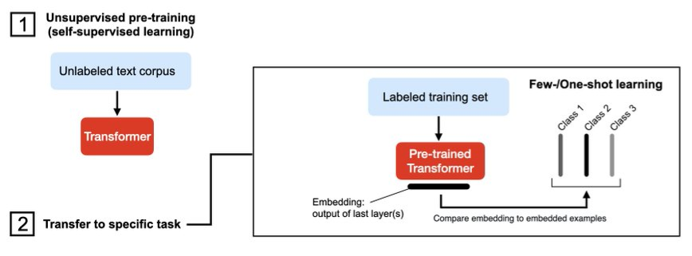

Transformers
Misc
- Description
- Deep feed-forward artificial neural network architectures that utilizes self-attention mechanisms and can handle long-range correlations between the input-sequence items.
- Adopts the mechanism of self-attention which differentially weights the significance of each part of the input data.
- Like RNNs, they’re designed to process sequential input data
- Unlike RNNs, transformers process the entire input all at once. The attention mechanism provides context for any position in the input sequence.
- If the input data is a natural language sentence, the transformer does not have to process one word at a time. This allows for more parallelization than RNNs and therefore reduces training times
- Strong (first real) Model:
- RoBERTa
- {{DistilRoBERTa}}
- A combination of speed and accuracy
- After squeezing the juice out of this model, you can scale up to the bigger versions and get better accuracy
- Raschka: Bert >> LSTMs (Thread)
- LSTMs outdated method for modeling text; out-of-the-box BERT model wins every time no matter the sample size
- Code included
- deberta-v3-xsmall
- DeBERTa improves the BERT and RoBERTa models using disentangled attention and enhanced mask decoder. With those two improvements, DeBERTa out perform RoBERTa on a majority of NLU tasks with 80GB training data.
- Small enough to allow you to iterate quickly
- RoBERTa
- Reasons that embeddings change:
- Change in your model’s architecture: This is a bigger change than before. Changing your model’s architecture can change the dimensionality of the embedding vectors. If the layers become larger/smaller, your vectors will too.
- Use another extraction method: In the event of the model not changing, you can still try several embedding extraction methods and compare between them.
- Retraining your model: Once you retrain the model from which you extract the embeddings, the parameters that define it will change. Hence, the values of the components of the vectors will change as well.
- Pre-trained models
- Google’s T5-11b (open sourced in 2019) requires a cluster of expensive GPUs simply to load and make predictions. Fine-tuning these systems requires even more resources
- OpenAI
- GPT-3 requires a significant number of GPUs simply to load.
- GPT-2 was originally announced in early 2019 and, thus, trained on data collected on or before that date
- GPT-J was released in 2021
- techniques such as model distillation and noisy student training are being rapidly developed by the research community to reduce model size
- Transformers Compared to Other DL Architecture
- RNNs implement sequential processing: The input (let’s say sentences) is processed word by word.
- Transformers use non-sequential processing: Sentences are processed as a whole, rather than word by word
- The LSTM requires 8 time-steps to process the sentences, while BERT requires only 2
- BERT is better able to take advantage of parallelism, provided by modern GPU acceleration
- RNNs are forced to compress their learned representation of the input sequence into a single state vector before moving to future tokens.
- LSTMs solved the vanishing gradient issue that vanilla RNNs suffer from, but they are still prone to exploding gradients. Thus, they are struggling with longer dependencies
- Transformers, on the other hand, have much higher bandwidth. For example, in the Encoder-Decoder Transformer model, the Decoder can directly attend to every token in the input sequence, including the already decoded.
- Transformers use a special case called Self-Attention: This mechanism allows each word in the input to reference every other word in the input.
- Transformers can use large Attention windows (e.g. 512, 1048). Hence, they are very effective at capturing contextual information in sequential data over long ranges.
Terms
- Coreference Resolution (article)
- ‘Daddy’, ‘He’ and ‘His’ refer to the same entity, identifying those entities and linking them to their antecedent is called co-reference resolution
- Use cases: Information Extraction, Question Answering, Summarization, Machine Translation
- Models:
- Semantic Search - A text query is transformed into an embedding then the most similar document embeddings are found and returned
- e.g. a search engines; Google uses BERT on a large percentage of their queries
- Zipf’s Law - the frequency of any word is inversely proportional to its rank in the frequency table. Thus the most frequent word will occur approximately twice as often as the second most frequent word, three times as often as the third most frequent word, etc.
{kind=link}
Algorithm
WarningUnfinished
These are raw notes from some article that has been lost to time. I’ll either totally replace them or use another article to refine them.
- Jacked-Up Notation
- Annotation:
- Backward Hidden State: Does h→T = h ↠?
- Allignment Model:
- Is st the same as h→ since you calling them both hidden states.
- Wtf? how can ci be in this model when c is what we’re calculating
- Visual: you can’t have yt = p(yt). Is y(t) the probability of itself which is a probability, so it would be the probability of a probability.
- Annotation:
- Language Translation Model (Bahdanau et al)

Overview (soft-)searches for the most relevant information located in different positions in the source sentence
It then generates translations for the source word jointly using the context vector of these relevant positions and previously generated (translated?) words.
- Bi-Directional encoder
- An annotation is for \(X_i\) by concatenating the forward and backward hidden states
\[ h_i = [\vec h_i^T; \vec h_i]^T \]- \(\vec h_i\) is a forward hidden state which is just the input at the ith position of the source sentence
- \(\vec h_i\) is the input at the ith position of a backwards source sentence
- Attention Block (?)
- \(\alpha_{tj}\) is the attention weight for each \(h_j\) annotation
\[ \begin{aligned} &\alpha_{tj} = \frac{e^{e_{tj}}}{\sum_{k=1}^T e^{e_{tk}}} \\ & \text{where} e{tj} = a(s_{t-1}, h_j) \end{aligned} \]- \(a\) is an alignment model (typically a feedforward network) which represents how well the annotation \(h_j\) is well-suited for the next (or is it current?) decoder hidden state \(s_t\) considering previous decoder hidden state \(s_{t-1}\)
- \(\alpha_{tj}\) is the attention weight for each \(h_j\) annotation
- An annotation is for \(X_i\) by concatenating the forward and backward hidden states
- Context Vector: Computed by attention block
\[ c_t = \sum_{j=1}^T \alpha_{tj} h_j \] - Decoder: RNN + Attention Block
\[ s_i = f(s_{i-1}, y_{i-1}, c_i) \] - Output of the RNN using this context vector is the probability of the translated word given the previous translated words that are before it in the sentence and the source sentence
\[ p(y_t | y_1, \ldots, y_{t-1}, x) = \text{RNN}(c_t) \] - Modern Attention Mechanisms (Vaswani et al.)
- The first one is the computation of attention distribution on the inputs, and the next one is the calculation of the context vector based on this distribution
- Infer the keys (\(K\)) from the source data (method depends on task)
- \(K\) can be a text or document embeddings, a portion of an image features (an area from the image), or hidden states of sequential models (RNN, etc.).
- Query, \(Q\), similar to \(s_{t-1}\) (previous decoder hidden state)
- Key-Value attention mechanisms: keys (\(K\)) and values (\(V\)) are different representations of the same input data and in the case of self-attention, all \(K\), \(Q\), and \(V\) are segregated embeddings of the same data i.e. inputs.
- Infer the keys (\(K\)) from the source data (method depends on task)
- Figure out the relationship (weights) between the \(Q\) and all \(K\)s through a scoring function \(f\) (also called energy function and compatibility function)
Calculate the Energy Score that shows the importance of \(Q\) with respect to all \(K\)s before generating the next output
\[ e = f(q, K) \]-
- Learnable parameters are:
- \(k\), \(v\), \(b\), \(W\), \(W_2\), \(W_3\)
- \(d_k\) is the dimension of the input vector (keys)
- The \(\text{act}\) is a nonlinear activation function (ie. tanh and ReLU)
- Learnable parameters are:
- The energy scores are fed into an attention distribution function named \(g\) like the softmax layer to compute the attention weights \(\alpha\) by normalizing all energy scores to a probability distribution, \(\alpha = g(e)\)
- \(\text{sparsemax}\) assigns zero value to the “irrelevant†elements (zero values?) in the output
- Softmax computes a value for every input value which produces computational overhead when dealing sparse matrices.
- A logistic sigmoid scales energy scores to the \([0, 1]\) range
- \(\text{sparsemax}\) assigns zero value to the “irrelevant†elements (zero values?) in the output
- Context
\[ \begin{aligned} &c = \sum_{i = 1}^n z_i \\ &\text{where} \quad z = \alpha_i v_i \end{aligned} \]
- The first one is the computation of attention distribution on the inputs, and the next one is the calculation of the context vector based on this distribution
{kind=link}
Loss Functions
- Categorical Cross-Entropy
- Use when your labels are one-hot encoded
- Sparse Categorical Cross-Entropy
- Use when your labels are integers
Metrics
- Checklist - Microsoft-led effort from 2020 to establish behavioral tests for NLP
Attention
- Attention Heads - Enable the Transformer to learn relationships between a time step and every other time step in the input sequence
- General Process
- Search for the most relevant information located in different positions in the input sequence when translating a word in each step.
- Generate translations for the source token (word) with regard to.:
- The context vector of these relevant positions
- Previously generated words, simultaneously
- Characteristics
- The softness of attention:
- Soft: uses a weighted average of all keys to build the context vector.
- Differentiable, so trainable by standard back-propagation methods.
- Hard: context vector is computed from stochastically sampled keys.
- Due to stochastic sampling, hard attention is computationally less expensive compared with soft attention which tries to compute all attention weights at each step
- Non-differentiable, so optimized via maximizing an approximate variational lower bound or reinforcing
- Local: soft attention in a window around a position. (i.e. only uses a subset of keys)
- a mixture of hard and soft attention (i.e. uses a subset but not chosen stochastically)
- Reduces the computational complexity and, unlike hard attention, it is differentiable which makes it easy to implement and optimize.
- Global: similar to soft attention (?)
- Soft: uses a weighted average of all keys to build the context vector.
- Forms of input feature:
- Item-wise: input representation is an encoding
- Location-wise: ?
- usually used in visual tasks
- Input representation:
- Co-attention, Self-attention, Distinctive attention, Hierarchical attention
- Output representation:
- Multi-head, Single output, Multi-dimensional
- Combinations used for various tasks

- The softness of attention:
- Difference between Attention Scores and the weights of a fully-connected layer (thread)
- Categories of Attention Modifications
- For much more detail on these, see The Map Of Transformers
- Sparse Attention: This technique tries to lower the computation time and the memory requirements of the attention mechanism by taking a smaller portion of the inputs into account instead of the entire input sequence, producing a sparse matrix in contrast to a full matrix.
- Linearized Attention: Disentangling the attention matrix using kernel feature maps, this method tries to compute the attention in the reverse order to reduce the resource requirements to linear complexity.
- Prototype and Memory Compression: This line of modification tries to decrease the queries and key-value pairs to achieve a smaller attention matrix which in turn reduces the time and computational complexity.
- Low-Rank Self-Attention: By explicitly modeling the low-rank property of the self-attention matrix using parameterization or replacing it with a low-rank approximation tries to improve the performance of the transformer.
- Attention With Prior: Leveraging the prior attention distribution from other sources, this approach, combines other attention distributions with the one obtained from the inputs.
- Modified Multi-Head Mechanism: There are various ways to modify and improve the performance of the multi-head mechanism which can be categorized under this research direction.
{kind=link}
{kind=link}
Training
- Strategies
- Misc
- Train From Scratch

- Not feasible since transformers require large amounts of data. So, we use unlabeled data for pretraining (as opposed to training from scratch in a supervised fashion)
- Feature-based: Train New Model on Embeddings
- Take a pre-trained transformer and cut off the last layer. Then, run Large Language Model (LLM) in inference mode and train a new classifier on the embeddings.
- Finetuning I: Freeze All but Output Layer Weights

- Add randomly initialized output layers and train in a transfer-learning fashion.
- Only update the fully-connected output layer and keep the base LLM frozen
- Finetuning II: Update All Weights

- Add randomly initialized output layers and train in a transfer-learning fashion.
- Update all model weights (the LLM base model as well as the output layers)
- Zero-Shot Learning (ZSL)
- A problem setup in which the model is asked to solve a prediction task that it was not trained on. This often involves recognizing or classifying data into concepts it had not explicitly seen during training.
- In most cases, a supervised model trained on a given task will still outperform a model using ZSL, so ZSL is more often used before supervised labels are readily available.
- Can significantly reduce the cost of obtaining labels
- If a model is able to automatically classify data into categories without having been trained on that task, it can be used to generate labels for a downstream supervised model. These labels can be used to bootstrap a supervised model, in a paradigm similar to active learning or human-in-the-loop machine learning.
- Make predictions without training data.
- Use a pre-trained model and provide a task via the model-pr
- Few-Shot Learning
- Learning from a few labeled examples.
- Either as an extension of the zero-shot example (with more Q&A); or embed examples
- Then do a nearest neighbor search and select the most similar example.
- Learning from a few labeled examples.
- Block-Recurrent Transformer
- The main breakthrough of this model is the Recurrent Cell: A modified Transformer layer that works in a recurrent fashion.
- Misc
{kind=link}
{kind=link}
{kind=link}
BERT
- Bidirectional Encoder Representations of Transformers
- Usually avaiable as a pre-trained model that has been trained across a huge corpus of data like Wikipedia to generate similar embeddings as Word2Vec
- The user then fine tunes the model by training it on a corpus of data that fits their context well, for example, medical literature.
- Embeddings take into account the context of the word.
- e.g. The word “play†in “I’m going to see a play†and “I want to play†will correctly have different embeddings
- Issues
- The initial BERT model has a limit of 512 tokens. The naive approach to addressing this issue is to truncate the input sentences.
- Alternatively, we can create Transformer Models that surpass that limit, making it up to 4096 tokens. However, the cost of self-attention is quadratic with respect to the sentence length.
- scalability becomes quite challenging
- Alternatively, we can create Transformer Models that surpass that limit, making it up to 4096 tokens. However, the cost of self-attention is quadratic with respect to the sentence length.
- The initial BERT model has a limit of 512 tokens. The naive approach to addressing this issue is to truncate the input sentences.